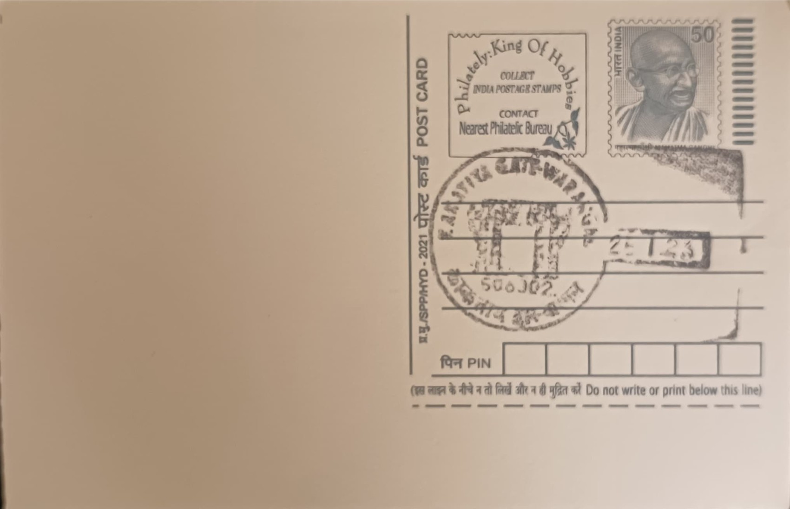

Warangal Gate
వరంగల్ ద్వారం


The Warangal Gate, known formally as the Kakatiya Kala Thoranam, takes its name from the Telugu word "thoranam," denoting a decorative festoon or archway traditionally hung at entrances for auspicious occasions. The structure was conceived not as a standalone monument but as one of four identical ornamental gateways marking the cardinal entrances to the great Swayambhusiva temple, a Shiva shrine that once stood at the heart of Warangal Fort. Only one of these four torana survives intact today, and it has since become the structure popularly identified simply as the Warangal Gate, its original devotional purpose now overshadowed by its later civic fame.
As a surviving fragment of a vanished Kakatiya-era temple, the gate occupies a distinctive place among Deccan monuments: it is simultaneously a religious relic, an archaeological specimen, and a political emblem. Architecturally, scholars have compared its form to the lofty toranas of the Sanchi stupa rather than to the gopura gateways typical of contemporary South Indian temples, making it an unusual hybrid in Indian temple architecture. Its most consequential modern distinction, however, is institutional rather than religious: since the formation of Telangana in June 2014, the silhouette of the Warangal Gate has served as the official state emblem, reproduced on government letterheads, seals, and public buildings across Telangana.
The temple complex to which the gate belonged is attributed to the Kakatiya ruler Ganapatideva, who reigned from roughly 1199 to 1262 CE and is credited with rebuilding an earlier brick fort in stone. Construction and embellishment of the fort and its temple are understood to have continued under his daughter and successor, Rudrama Devi, who ruled until around 1289. The surviving gate stands roughly nine metres tall, carved from granite in a deep pink hue, and is worked with the geometric lattice patterns and foliate scrollwork characteristic of Kakatiya stone carving, comparable in craftsmanship to the ornamentation found at the nearby Thousand Pillar Temple and the Ramappa Temple.
A notable feature of the gate's design is that each of the four original toranas was oriented to a cardinal direction, framing views toward the fort's inner and outer defensive rings, which were laid out in three concentric circles of earthen and stone walls. The temple they once adorned was largely destroyed during the repeated invasions and eventual fall of the Kakatiya kingdom in the fourteenth century, leaving the gateways as the most legible remnants of the shrine's original plan. The Warangal Fort complex, within which the gate stands, has also been placed on UNESCO's tentative list of World Heritage Sites, a recognition that has drawn renewed conservation attention to the surviving structure.
The gate and the wider Warangal Fort are today maintained as a protected monument by the Archaeological Survey of India, which oversees the site's upkeep alongside the Telangana state tourism department, and the area has been developed into a fort park and open-air museum drawing visitors to its ruins, moat, and scattered sculpture. The postal pictorial cancellation issued from Warangal HO depicting the gate reflects this dual status, marking a monument that is at once an archaeological custodial responsibility and the visual mark under which the state's own administrative correspondence is issued.
| Date of Introduction | August 1, 1975 |
|---|---|
| Address | Senior Postmaster, |
| Warangal HO, | |
| Warangal (dt.), Telangana - 506002. |